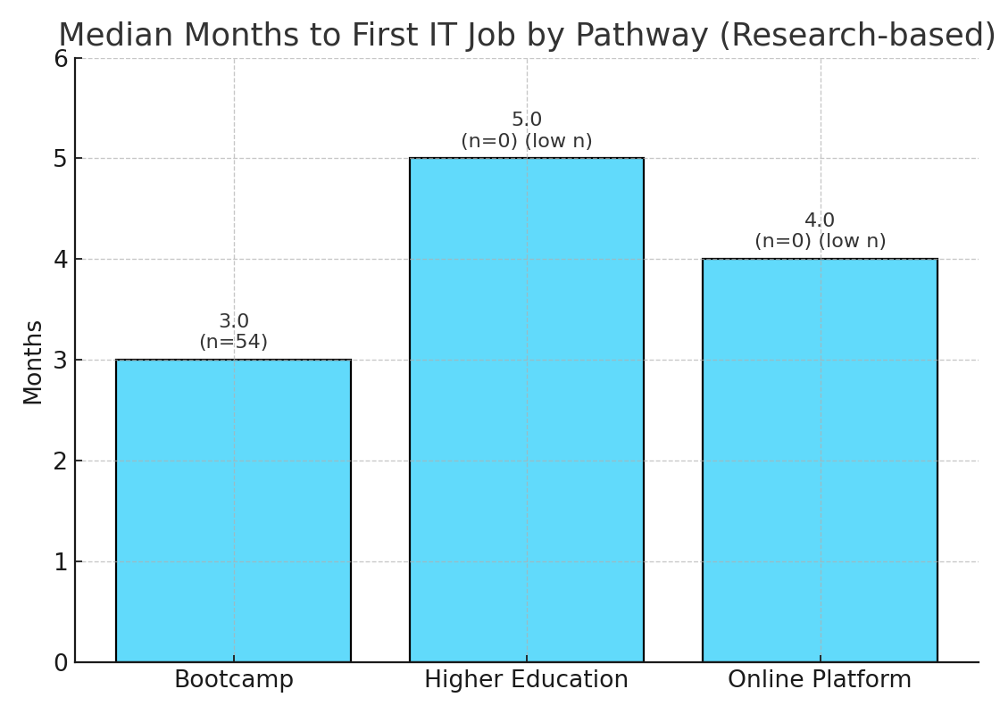
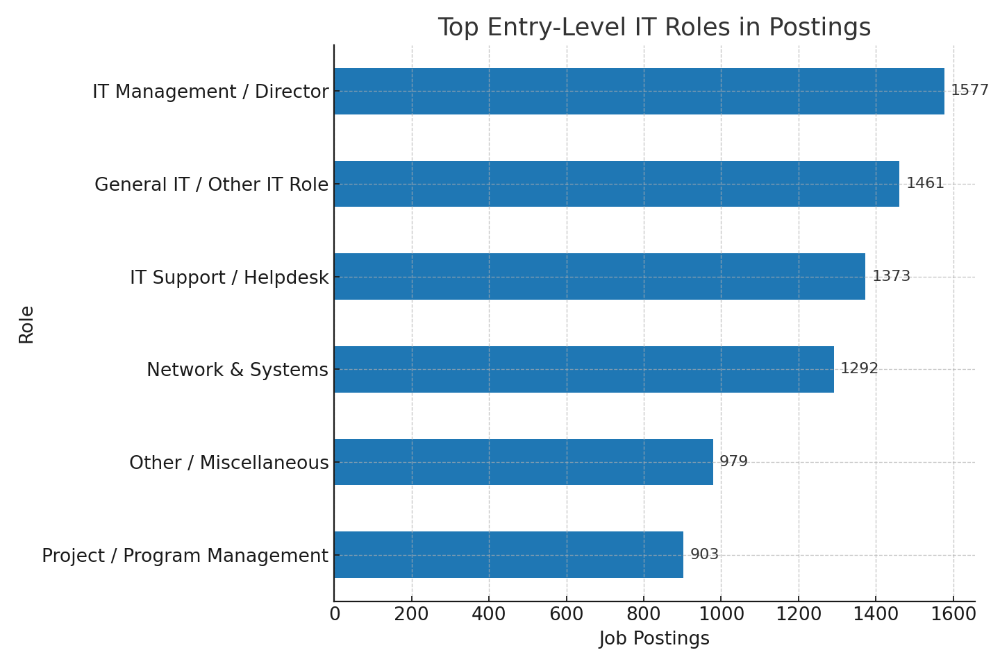
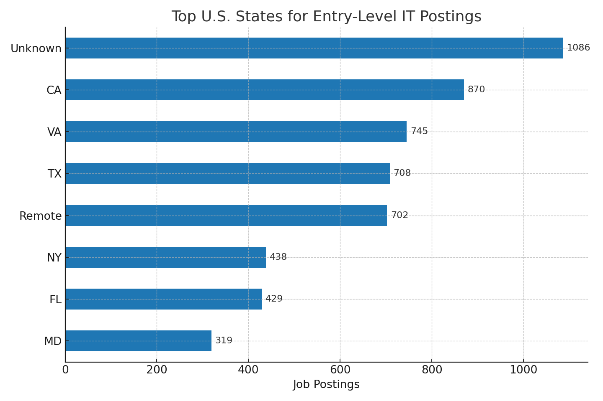
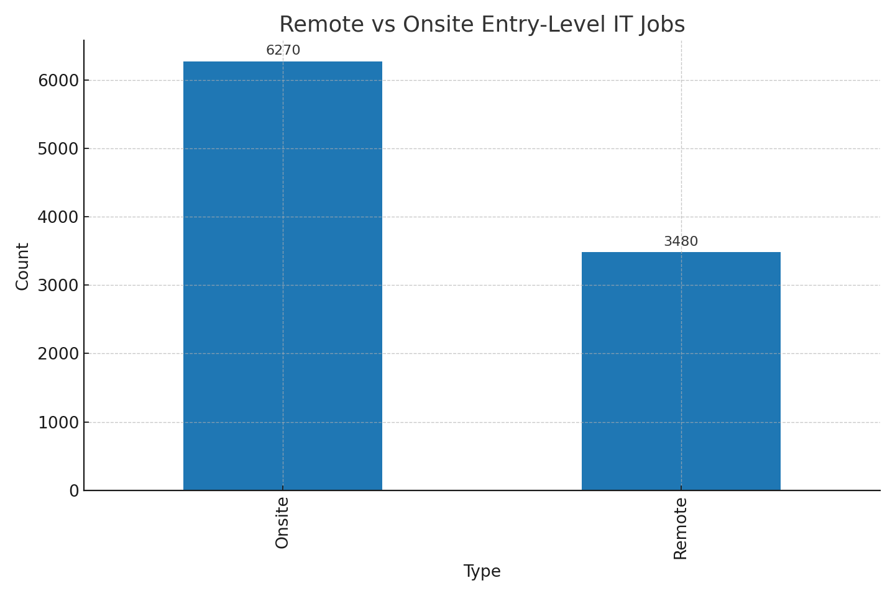
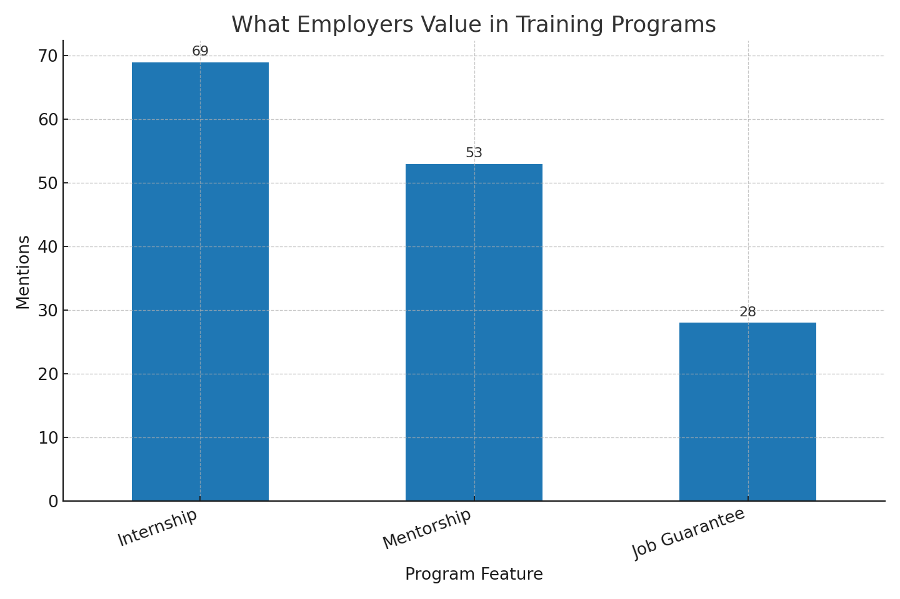
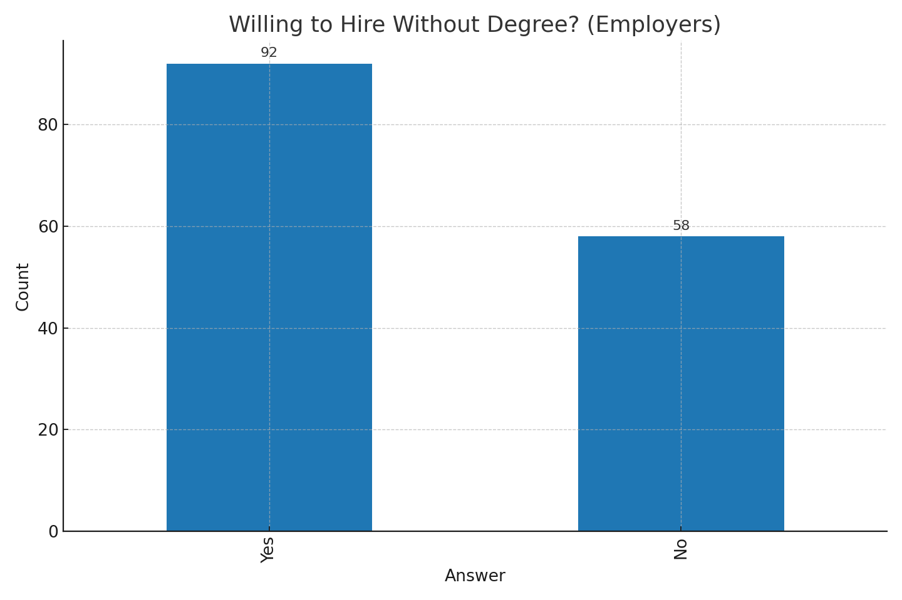

Main Research Question
What are the most accessible and employer‑relevant career pathways into the IT sector for young displaced individuals without prior tech backgrounds in the U.S., and how do alternative education models compare to formal higher education in enabling employment outcomes?
Overview
Millions of displaced youth in the U.S. face barriers to sustainable employment. The tech sector offers a viable path, but access depends on which pathway you choose and how programs support you. This page summarizes evidence from our SQ1–SQ5 analyses.
Why this matters: Displaced youth encounter disrupted education, documentation hurdles, and limited networks. Meanwhile, employers increasingly hire for skills over degrees. If we identify models that work and scale, tech can become a vehicle for mobility.
78%
Bootcamp employment rate (1 year)
+41%
Bootcamp average salary growth
82%
Degree employment rate (1 year)
+35%
Degree average salary growth
Barriers & Demographics
- Access to Formal Education: Tuition, documents, and language needs can block entry to degree programs.
- Navigation of Pathways: Learners often lack guidance on accessible roles and realistic starting points.
- Quality & Recognition: Bootcamps/online courses vary in quality and employer recognition.
- Trauma & Readiness: Stress and instability impact learning persistence and confidence.
- Employer Biases: Some employers still prefer degrees or U.S. experience.
- Data Gaps: Limited evidence on outcomes for displaced learners in alternative pathways.
Audience & Use
- For learners: choose paths with mentorship and job placement.
- For providers: make projects, coaching, and referrals first‑class features.
- For employers: hire for skills and potential, not just pedigree.
Outcomes by Pathway



Interpretation
- Speed vs. Certainty: Bootcamps may deliver quicker entry; degrees trend slightly higher in stability/salaries.
- Support is a multiplier: Mentorship + placement consistently associate with better outcomes.
- Correlation, not causation: Motivation and networks are unobserved confounders.
Entry‑Level Opportunities



Actionable Tips
- Start with support‑heavy programs; prioritize portfolio output.
- Target states with dense entry‑level postings; filter for remote‑friendly roles.
- Leverage micro‑credentials to validate skills quickly.
Employer Insights


Methods & Limits
- Methods: EDA, before/after comparisons, feature engineering, and logistic regression.
- Limits: LinkedIn sampling bias, self‑reported salary, class imbalance; correlations not causation.